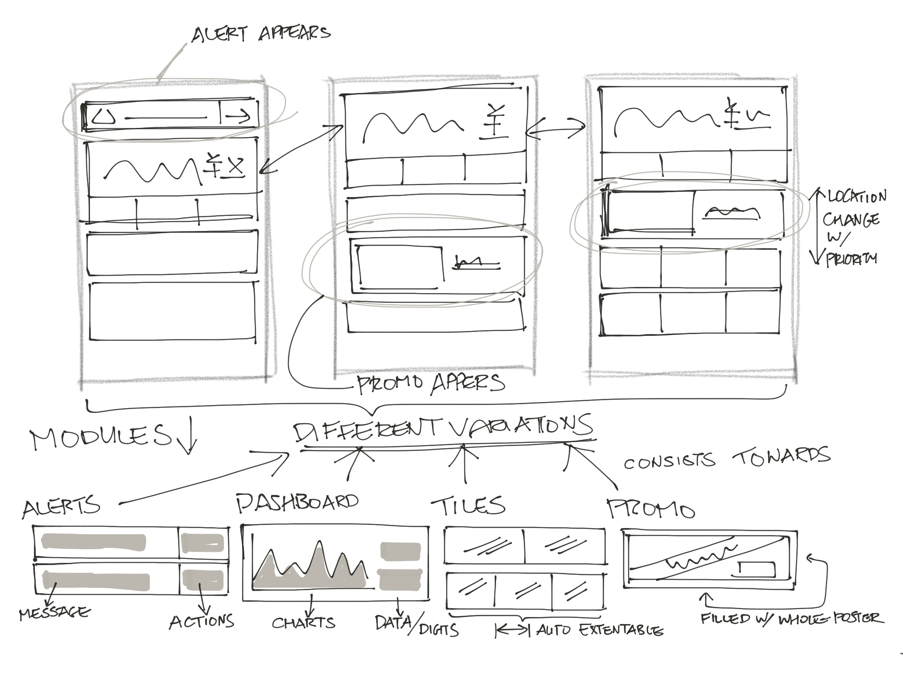
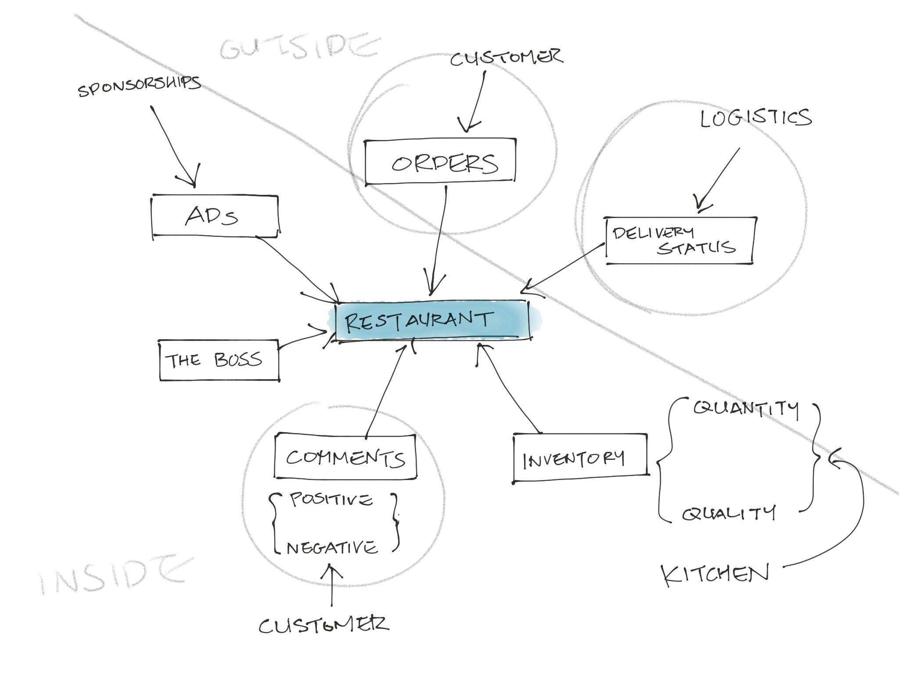
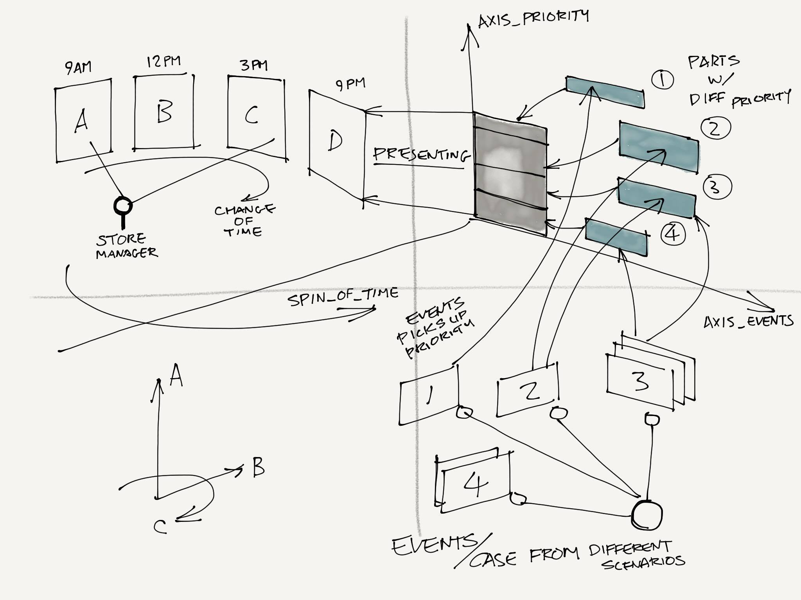
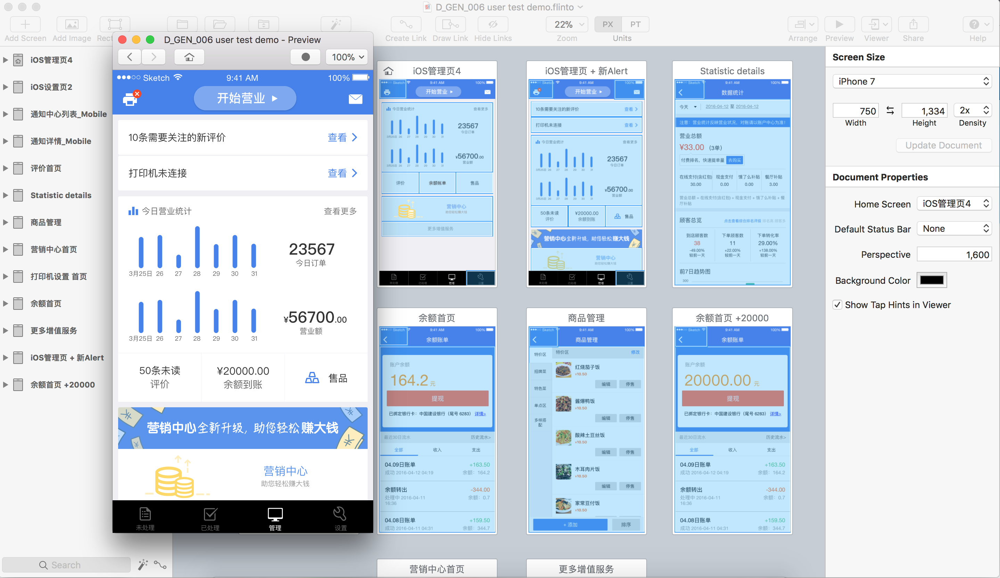
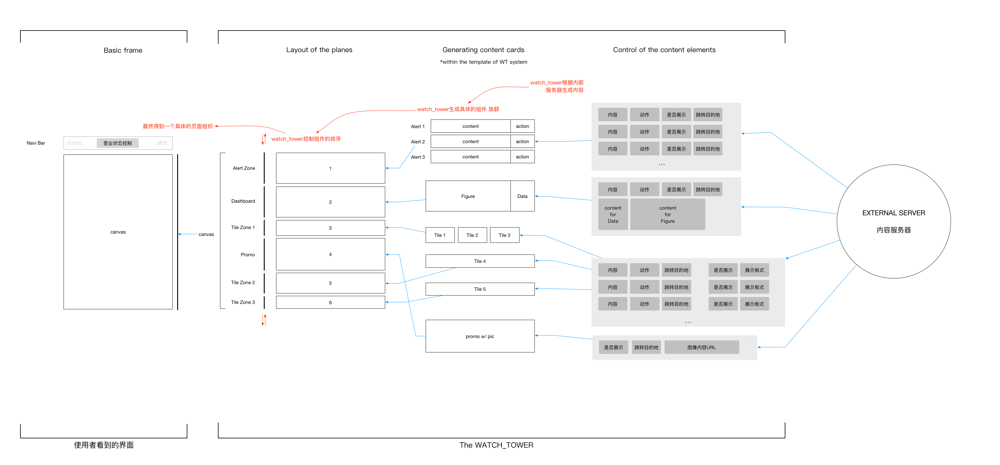

Store managers in the catering and retail industry frequently struggled with inefficient and complex back-office management and inventory control systems.
To resolve this, I designed the NAPOS App, a mobile SaaS application aimed at optimizing daily operational workflows.
After conducting pre-design interviews to identify high-frequency operations, I designed an intuitive dashboard utilizing a card-based UI and Floating Action Buttons (FAB) for quick inventory status checks and single-click actions.



I developed a streamlined, user-friendly mobile platform that significantly reduced the cognitive load for store managers, enabling faster decision-making and highly efficient inventory control.


My early experience as a product manager in the tech industry honed my ability to simplify complex logic, a skill that continues to inform both my academic research and my approach to product innovation.